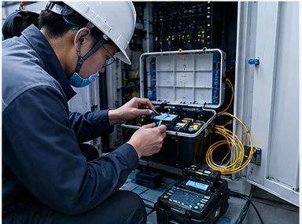
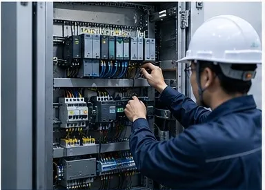
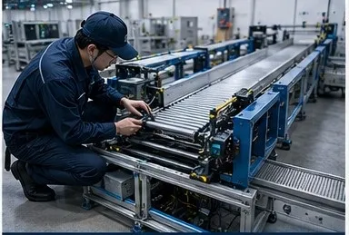

Services
Comprehensive support from field infrastructure to system deployment and operations optimization.
1 Field Infrastructure Implementation Support
Network, fiber, security, equipment installation — keeping your site on schedule and stable.
Network Cabling Installation
Comprehensive cabling for data centers, office buildings, and factories. Includes Cat6A/Cat7 copper cabling, fiber fusion splicing and termination, patch panel organization and labeling, rack mounting and cable management, testing certification, and report delivery.

Fiber Optic Installation
Indoor and outdoor optical cable installation and splicing. Includes single-mode/multi-mode fiber construction, aerial/conduit/tray laying, fusion splicing and OTDR testing, ODF frame installation and termination, trunk cable routing and intermediate distribution.

Security & Low-Voltage Systems
On-site installation and implementation of CCTV, access control, and entry/exit management equipment. Includes camera installation and calibration, access control system wiring, network equipment rack installation, low-voltage conduit routing and testing.

Equipment Installation & Setup
On-site installation of communications equipment and server cabinets. Includes equipment racking and mounting, power and grounding work, network connectivity verification, cable labeling and documentation, on-site environment adaptation and adjustment.
2 System Product Field Deployment Support
Control systems, robotics, information systems — implementing technology products in real-world field environments.

Factory Control System Implementation
On-site installation and commissioning of PLC and various control systems. Includes control panel assembly and wiring, field instrument and sensor connection, HMI-to-controller communication verification, I/O testing and interlock commissioning, site acceptance and documentation.

Logistics Robot Deployment
On-site deployment support for AGV/AMR and other logistics robots. Includes site survey and travel path confirmation, station and charging station setup, system integration with upper-level dispatch systems, on-site safety verification, trial run support, and operator training.
Legacy ERP System Modernization
On-site support for upgrading and renovating existing ERP systems. Includes server and client environment verification, network configuration and communication testing, data migration and validation, cutover support, and post-deployment functionality confirmation.

Equipment Monitoring Communication Testing
Communication verification and on-site validation for various equipment monitoring systems. Includes communication testing between field devices and monitoring systems, network path confirmation, protocol and communication parameter configuration, data acquisition validation, and anomaly investigation and reporting.
* Listed technologies represent areas of proven capability and do not imply official partner certification from any vendor.
3 Continuous Field Operations Optimization Support
Survey, failure analysis, digitalization, system evaluation — supporting continuous improvement in the field.

Manufacturing Site Problem Investigation
System products need real field data feedback to further improve performance. We go deep into manufacturing sites to investigate actual operating conditions, uncover hidden issues, and provide actionable improvement plans.

Logistics Site Failure Analysis
When automated systems encounter a failure, production lines can come to a halt. We analyze the cause, identify the root problem, resolve outages, and restore stable field operations.
Field Operations Digitalization
Record critical data, leverage AI analysis, and create a virtuous cycle of improvement. Transform field experience into reusable data assets for continuous operational efficiency gains.
System Upgrade Assessment
Determine whether a system needs updating and how to carry forward valuable data and experience. We assess system lifespan from a real-world operational perspective and develop sound upgrade and migration plans.
From Field Diagnosis to System Implementation, We Support You Every Step of the Way
No matter what stage you are at, we are ready to discuss your needs face-to-face and find the best solution.
We typically respond within 24 hours.